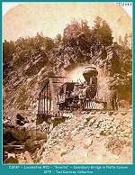
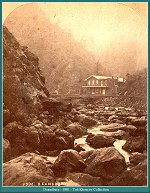
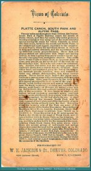
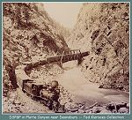

|
 |
Denver South Park and Pacific #10, "GRANITE"
at Deansbury Bridge in Platte Canyon 1879 (image 0023) (199k) |

|
 |
Denver South Park and Pacific Railroad
Deansbury in Platte Canyon 1881 (image 00423) (174k) |

|
 |
Text that accompanied Image M00423
(image 00424) (158k) |

|
 |
DSP&P locomotive #112 in Platte Canyon near Deansbury.
(Image 00118) (157k) |

|
The Narrow Gauge Circle is written, maintained,and hosted by: Mark L. Evans Send Comments to:Mark L. Evans All original materials, text, and digital images Copyright © 1995-2004 Mark L. Evans. All rights reserved. Imitation is said to be the "sincerest" form of flattery.....Please don't flatter us without permission. |